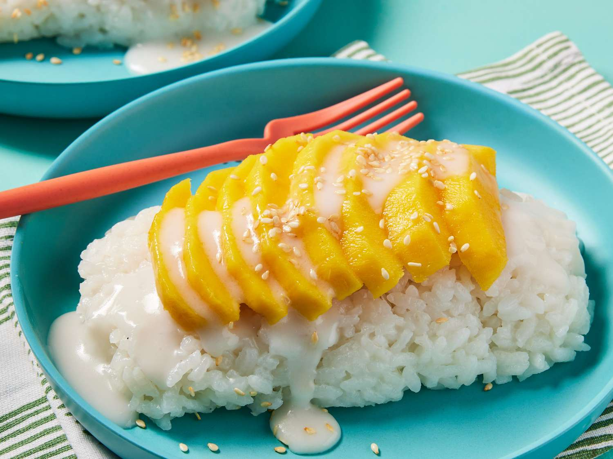
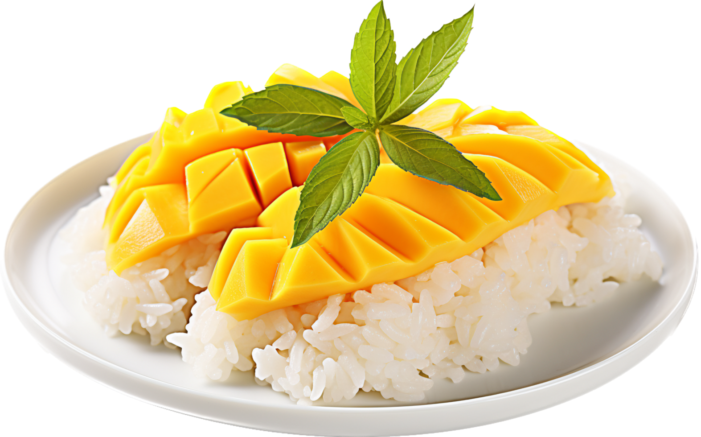

Mango Sticky Rice
Introduction
Mango sticky rice is a dish featuring sliced fresh mango with coconut milk on top of sticky rice. It is a popular Thai dessert that can be found in most Thai restaurants. I chose this dish because it is relatively easy to make while simultaneously being delicious. The fresh sweet mango with the texture of the rice and coconut flavor from the sauce makes this dessert irresistable. In this recipe, I will show you how to create a simple dish of mango sticky rice.

Ingredients
- 1 cup uncooked sticky rice
- 3 ripe mangoes, peeled and sliced
- 1 can full fat coconut milk
- ¼ cup sugar
- ½ teaspoon salt
- Toasted sesame seeds for garnish (optional)
Instructions
- Rinse the sticky rice with water and use your hand to gently stir it. Drain the water to remove the excess starch. Repeat once, then add cold water to cover. Soak the sticky rice for a minimum of 1 hour. Once soaked, rinse again and drain the water.
- Transfer the rice to a heatproof bowl, add about 2” of water to your steamer, place the heatproof rice bowl in the steamer and cover it. Turn to medium-high heat to bring the water to a boil, or 100°C. When the steam starts to come out of the pot, turn to medium heat. Steam for 20 to 25 minutes, until the rice is cooked through. Remove the pot from the stove. Let sit, covered, while you prepare the other ingredients.
- While the rice cooks, make the sauce. Combine the coconut milk, sugar, and salt in a saucepan. Cook over medium heat until the mixture is hot and the sugar is melted. Do not bring the coconut sauce to a boil.
- Carefully remove the bowl of sticky rice from the steamer. Pour 1 cup of the sauce into the rice. Stir to mix well until the sauce is fully absorbed.
- When the rice mixture cools to room temperature, transfer ⅓ cup of the coconut rice to each of several small serving bowls or plates. Place the sliced mango on top. Pour a few spoonfuls of the extra coconut sauce on top of the rice. Garnish with toasted sesame seeds, if using.
